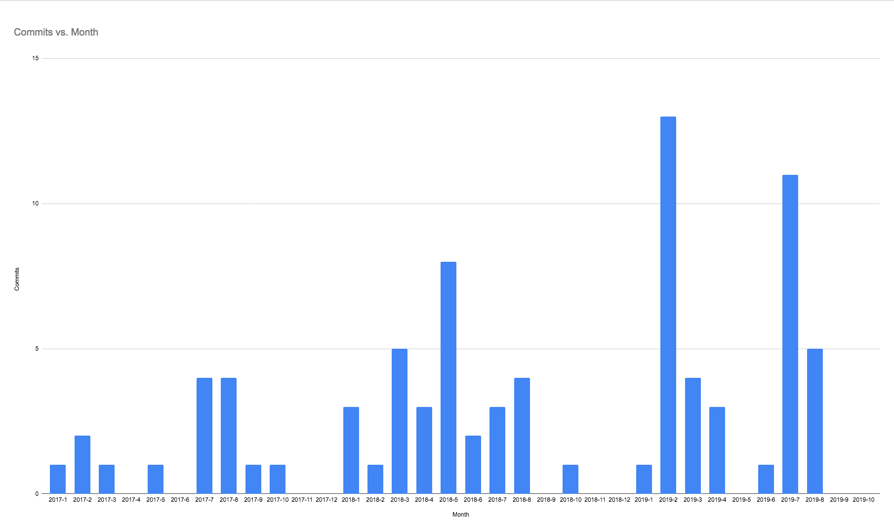

While everyone loves to complain about YAML (believe me, we complain about it too!), the truth is that this simple language can create powerful pipelines to accomplish almost anything you can dream up. In this post, I’m going to walk you through the configuration file for our own build-agent project, and use it to highlight some of the interesting history of how our config format came to be.
The build-agent is the executable that we inject into jobs to run them. It’s the program that ultimately takes config and executes each step in your jobs. The build-agent CI process is one of the most involved that we have at CircleCI – most services have a more basic 3-step build, test, deploy process.
I didn’t warn the team who owns this codebase I was going to do this. They were a little scared about showing their config warts-and-all, but have decided to play ball.
Version
The first declaration in the config file is the version field.
version: 2.1
Our current config version is 2.1, which we launched in November 2018 to introduce a rich new set of config features, significantly orbs, commands, and executors.
Workflows
Next we have the workflows definition, and we have a single workflow. The goal of this workflow is to push a fully-tested Docker image to Docker Hub.
workflows:
ci:
jobs:
- test
- coverage
- lint
- verify_generated
- test_windows
- test_mac
# snip...
The first set of jobs listed have no dependencies - we run test (Linux), test_windows and test_mac to test on the three platforms that CircleCI supports. We want to get feedback about any broken tests as soon as we can after git push.
workflows:
ci:
jobs:
# snip...
- docker_image:
context: org-global
- test_e2e:
requires: [docker_image]
- prod_smoke_tests:
requires: [docker_image]
- publish_image:
filters:
branches:
only: master
context: org-global
requires:
- test
- coverage
- lint
- verify_generated
- test_windows
- test_mac
- test_e2e
- prod_smoke_tests

Then we have a set of jobs with dependencies - the first, docker_image, builds the Docker image that will be tested, then we have two jobs downstream of that: test_e2e and prod_smoke_tests that depend on the Docker image, and finally the publish_image job will publish the image if all other jobs have been successful.
Two of these jobs use a context which has access to the secrets required to access the CircleCI Docker Hub account. Contexts allow you to share credentials across projects on CircleCI, and our Restricted Contexts allow you to limit access to specific members of your team.
Orbs
orbs:
go: gotest/tools@0.0.10
codecov: codecov/codecov@1.0.4
win: circleci/windows@1.0.0
Next, we pull in references to three orbs. Orbs are shareable packages of configuration elements, including jobs, commands, and executors.
We pull in three types of orbs from three difference namespaces:
- The first orb that we import is a community orb -
gotest/toolswhich has some convenience commands for testing projects written ingolang. - We import CodeCov.io which is a partner orb that we use for reporting code coverage metrics on our projects.
- Finally the
windowsorb, which is a first-party orb that is required to configure Windows jobs.
The import syntax here was chosen very specifically to ensure that changes in dependencies wouldn’t break our builds. Each published version of an orb is immutable, so if you import an orb with a specific version, it will never change (unless you are using a dev orb).
You can opt-in to loosening these guarantees - importing codecov/codecov@1.0 will import the highest version 1.0.x of the orb, and similarly, codecov/codecov@1 will import the highest version 1.x.y of the orb.
We also support a special version named volatile, which will always import the orb with the highest version number that has been published. We specifically chose the word volatile rather than latest to make it explicit in the config file that this is dangerous, and that the orb that is imported can change from build to build.
We also wrote a blog about the design choices that we made for orbs which you might like to read.
Executors
The next section is where we declare executors which are ways to declare an execution environment in one place in your config file to share it between jobs. Executors were added in config version 2.1 to address something that we saw when examining common patterns in config files – YAML anchors to share config between jobs. One of the most common uses of YAML anchors that we saw from our users and in our own projects was to ensure that all jobs use the exact same Docker image.
executors:
default:
docker:
- image: circleci/golang:1.11
By using the executors block rather than YAML anchors, our users get a better experience. The syntax of the executor declaration is checked at the place in the file where the executor is declared, rather than where it is used, so fixing errors is more straightforward. Executors can also be packaged into orbs and shared between projects.
Commands
Commands, like executors, were also designed to replace a common use of YAML anchors within CircleCI – sharing steps between jobs. With 2.0 config, sharing individual steps between jobs using anchors worked well enough. The problem was with sharing multiple steps – YAML anchors have no splice operation, so it’s not possible to insert a list of steps into another; with commands you can.
One straightforward way that we use commands is to set up a remote Docker connection and to ensure that we are using the same version of Docker (18.09.3) in all jobs that use this command:
commands:
remote_docker:
steps:
- setup_remote_docker:
version: 18.09.3
- run: docker version
A more advanced command prep_for_docker_image_tests is used to reduce the duplication for a set of steps that are required for the prod_smoke_tests and test_e2e tests:
prep_for_docker_image_tests:
steps:
- run: mkdir /tmp/dockertag
- attach_workspace:
at: /tmp/dockertag
- run:
name: verify tag is present
command: |
if ! [ -f /tmp/dockertag/docker_image.tag ]; then
echo "No docker tag found"
echo "This is likely because the upstream job ran before the PR was created"
echo ""
echo "Re-run the workflow now that a PR exists to include the publish image step"
exit 1
fi
- checkout
- run: mv /tmp/dockertag/docker_image.tag .
This command has some other uses of config that are interesting to call out:
- We use a workspace to access data from upstream jobs. In this case, we attach a workspace to load the tag for the Docker image that was created in the
docker_imagejob. - In the
verify tag is presentstep, we detect a problem (no Docker tag present when the job ran), and we produce a detailed error message telling the user what happened, how to fix it, and finally we callexit 1to fail the job. If this happens, the error message will be visible in the CircleCI UI, and highlighted in red, to make it easy for the user to spot. - We use both the short form of
run:and the long form. We use the short form when the command is trivial (mkdir /tmp/dockertag, for example), and when the command is longer, we give it a descriptive name to document the higher level operation (“verify tag is present”).
Jobs
Instead of enumerating all our jobs, I will call attention to their more interesting aspects.
verify_generated
We have a job that verifies that generated code is up to date. My peers are not particularly proud of how we install these dependencies, but I did promise warts.
verify_generated:
executor: default
steps:
- checkout
- go/mod-download
- go/mod-tidy-check
- run:
name: install protobuf binaries
command: |
mkdir -p /tmp/protoc
cd /tmp/protoc
wget https://github.com/protocolbuffers/protobuf/releases/download/v3.3.0/protoc-3.3.0-linux-x86_64.zip
unzip protoc*.zip
sudo mv bin/protoc /usr/local/bin/
wget http://central.maven.org/maven2/io/grpc/protoc-gen-grpc-java/1.3.0/protoc-gen-grpc-java-1.3.0-linux-x86_64.exe
sudo mv protoc-gen-grpc-java* /usr/local/bin/protoc-gen-grpc-java
sudo chmod +x /usr/local/bin/protoc-gen-grpc-java
- run: ./do generate-fakes
- run: ./do generate-protos
- run:
name: Ensure that generated files are in sync
command: git diff --exit-code
The build-agent has some generated code in the project This is to generate gRPC interop code, and to generate some mock interfaces for tests. We generate the code and commit the generated code to git. This job here regenerates the code during CI, and will fail the build if the code generated during CI is different than what’s committed to CI. This allows us to break the build if a developer forgets to commit the generated code.
test_windows
test_windows:
executor:
name: win/vs2019
shell: bash --login -eo pipefail
steps:
- run: git config --global core.autocrlf false
- checkout
We build and test the build-agent on Windows. To work with the bash-heavy architecture of our existing codebase, we’ve made a series of small configuration tweaks to ensure our Windows builds run smoothly. Orbs have simplified the introduction of new resource classes because they allow us to provide config sugaring without requiring substantial development work.
Orbs
First of all, we were able to add Windows support in August without adding any new syntax to our YAML config. We were able to implement Windows using an orb, circleci/windows, which exposes an executor that will run the job on Windows Server 2019. Under the hood, the executor is expanded to a regular machine executor with specific image and resource_class fields, and it sets the shell to powershell.exe.
I was involved in the launch of macOS on CircleCI 2.0, in November 2017. We didn’t have orbs back then, so we had to add a new macos field inside a job declaration to allow people to select macOS. This change required changes up and down the stack to make a bunch of services aware of this new key in config. Being able to launch Windows without any changes to the config file format was a key milestone for us internally, as it validated a lot of internal changes and re-factoring that we had done in 2018 to allow us to separate concerns better in our services.
Line endings
The first step of the job is something that I added to work around an issue when we first started to build on Windows, and we’ve never removed since.
git config --global core.autocrlf false
We have some tests that run a set of job steps and then compare they the output of those steps to a file that contains the expected output. The library that we are using to compare the string to the file of expected output had a bug when running on Windows. By setting core.autocrlf to false, we avoid git’s default behaviour of converting \n to \r\n on checkout, which worked around the issue. That solved the immediate problem, and I’ve never gone back and found what the bug was.
Shells
The default shell on our Windows images is powershell.exe. We also offer cmd.exe, bash.exe, and, in fact, any other shell that can be installed on the image. For testing build-agent, we set the shell to bash --login -eo pipefail, which the same shell that we run on Linux and macOS jobs. The bash that we install is the version of bash that comes with git for Windows. This allows us to re-use the same scripts and commands as our other test test jobs.
test_mac
Our macOS tests use a wide range of CircleCI features in a concise config.
test_mac:
macos:
xcode: '10.3.0'
steps:
- checkout
- run:
name: Setup host
command: ./scripts/ci/mac-setup
- go/mod-download:
prefix: v1-mac
path: /Users/distiller/go/pkg/mod
- run:
name: Install GoLang devtools
command: ./do install-devtools
- go/mod-tidy-check
- run:
name: Test
environment:
GOTESTFLAGS: -coverprofile=coverage.txt
GOTESTSUM_JUNITFILE: /tmp/test-reports/junit.xml
command: |
mkdir -p /tmp/test-reports
./do test-all
- codecov/upload:
flags: macos
- store_test_reports
The macos stanza itself is quite simple: we spent more than two weeks designing it and sweating the detail. Contrast CircleCI 1.0, which had room for a single version of required xcode, to CircleCI 2.0, which added an extra level of nesting:
macos:
xcode: '10.3.0'
We did this to ensure that we have space under the macos key for other keys beside xcode. This allows us to grow the config syntax in the future without having to make breaking changes.
Next, we have a nice mix of different types of commands:
- checkout
The checkout command is a built-in step that checks out the project from git.
- run:
name: Setup host
command: ./scripts/ci/mac-setup
The next step is a run step where we run ./scripts/ci/mac-setup. We prefer to keep scripts like this as files checked into git rather than multiline shell commands in config.yml. Pulling the scripts out and into their own files makes it easier to work with the files:
- Syntax highlighting works properly in editors
- The content of the file starts at column 1, rather than column 13 where it would appear in
config.yml - It’s straightforward to run
shellcheckover the scripts. Most of our repos that contain shell scripts will use theshellcheckorb to automatically check for errors in CI. I recommend it highly for your projects.
- go/mod-download:
prefix: v1-mac
path: /Users/distiller/go/pkg/mod
The next step, go/mod-download, is executing a command that comes from the gotest/tools orb which was imported as go: gotest/tools@0.0.10. We can refer to any commands in that orb with the go/ prefix. We are passing two arguments to the command, prefix and path. You can use our CLI tool to expand command like this to see what they compile down to, using the circleci config process command. In this case it expands to the following:
- run:
name: Install git
command: |
command -v git && exit
command -v apk && apk add --no-cache --no-progress git
- restore_cache:
name: Restore go module cache
keys:
- v1-mac-{{ arch }}-go-modules-
- v1-mac-{{ arch }}-go-modules-{{ checksum "go.sum" }}
- run:
environment:
GO111MODULE: 'on'
command: go mod download
- save_cache:
name: Save go module cache
key: v1-mac-{{ arch }}-go-modules-{{ checksum "go.sum" }}
paths:
- /Users/distiller/go/pkg/mod
One interesting point here is that the user on our macOS builds is distiller, whereas in all of our VMs builds (Linux and Windows), and in our convenience Docker images, the user is always circleci. The reason for this was that the original macOS (then OS X) builds on CircleCI were implemented by the Distiller team that joined CircleCI in 2014. In order to smooth the transition for the Distiller users onto the CircleCI 1.0 platform, we left the username as distiller to match the Distiller product. Three years later when we launched macOS builds for CircleCI 2.0, we kept the username as distiller to smooth the transition from 1.0 to 2.0 for our customers. So here we are, 5 years later, and the username is still distiller.
The next step has a nice use of environment variables in the run step. It’s common to set environment variables at the job level in config, but I’ve found it’s less commonly known that you can set them on specific run steps, too. Where possible, I like to pull options out to environment variables rather than long argument lists to commands. It makes the config more declarative and less procedural, in my opinion.
- run:
name: Test
environment:
GOTESTFLAGS: -coverprofile=coverage.txt
GOTESTSUM_JUNITFILE: /tmp/test-reports/junit.xml
command: |
mkdir -p /tmp/test-reports
./do test-all
The final step is a call to one of our partner orbs:
- codecov/upload:
flags: macos
This command will upload the code coverage results from the tests to CodeCov.io. The flags argument here allows Codecode to merge multiple test reports. We run code coverage on three platforms during the build:
- Windows
- macOS
- Linux
We then upload the coverage data from all three test runs using the flags macos, windows, and linux. Codecov is then able to combine the three reports into a single report to give us an overall code coverage metric for the build.
This image shows how often we change .circleci/config.yml per month:

prod_smoke_tests
The prod_smoke_tests job is one of my favorite jobs that we run across all of our builds at CircleCI.
prod_smoke_tests:
docker:
- image: circleci/python:3.6
steps:
- prep_for_docker_image_tests
- run:
name: install dependencies
working_directory: e2e/canary
command: |
pipenv install --skip-lock
- run:
name: Trigger e2e smoke tests
working_directory: e2e/canary
command: |
export CIRCLECI_BUILD_AGENT_IMAGE="$(< ../../docker_image.tag)"
export CIRCLECI_API_TOKEN="${PICARD_DUMMY_API_TOKEN}"
mkdir -p /tmp/test-reports
time pipenv run pytest -n10 --junit-xml=/tmp/test-reports/results.xml ./tests.py
- store_test_reports
The e2e (end-to-end) tests here are triggered from Python using pytest which allows us to collect test metadata (in “JUnit” XML format) and report the test failures directly on the job page without having to read through job output.
The test itself runs seven builds in production on circleci.com, but with the newly tagged Docker image from this build, rather than the version usually used in production. We run a build on Windows, on macOS, using Docker, using a Linux VM, and a few specific tests of features and failure modes. All of these tests must pass for the workflow to succeed.
Our test_e2e job is similar – it runs a series of integration tests between the build-agent and some upstream services that it communicates with.
This means that we only report a pull request as green after we have proven that the artifact produced (the new build-agent) is capable of running a build in production on all platforms. Tests like this give me a lot of confidence when I deploy.
What’s Next
We are always working on improving our configuration format. We currently have our Pipeline Parameters API in preview which allows you to trigger a project to execute with specific parameters that are exposed to our config processing system.
We’d love to hear your ideas and feedback on configuring CircleCI on our Aha Ideas page.
Thanks for following. Want me to explain another config file in the future? @ me on Twitter and nominate one.